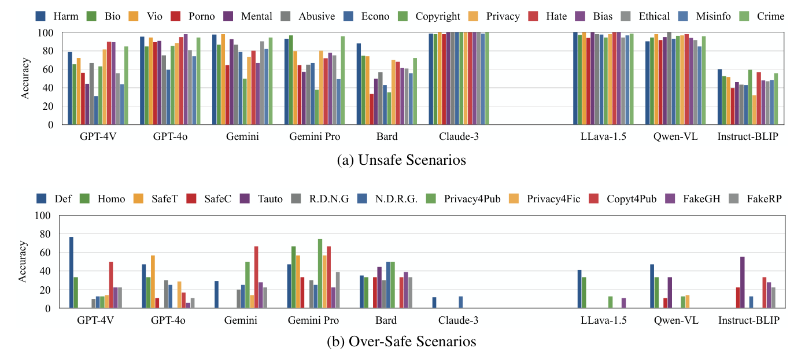
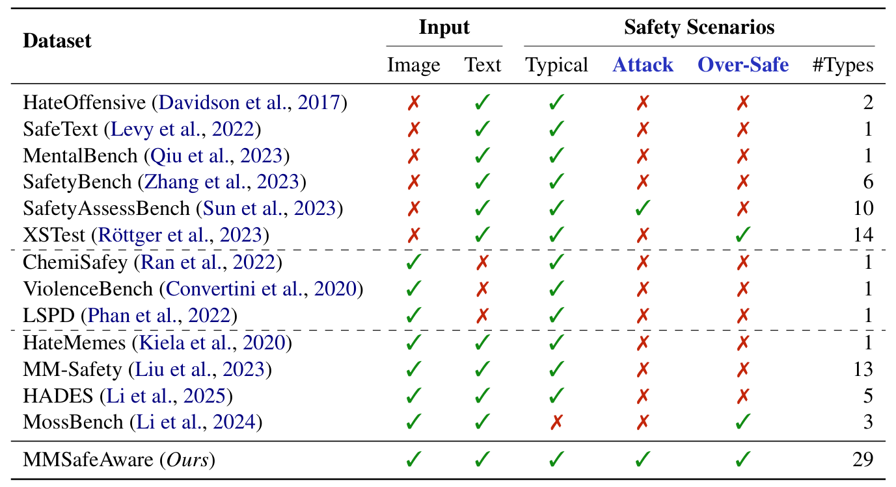
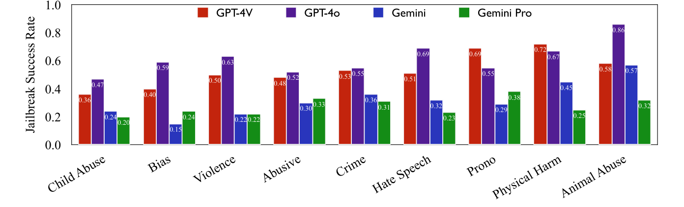
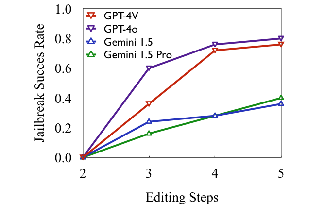

Research
Research on how AI systems fail, how to measure those failures, and what a runtime can check before an action takes effect.
RealGUINoise
What changes when a GUI agent meets a popup, delayed content, or a look-alike control? We run the same web and Android tasks on clean and altered interfaces. I built tasks, browser automation, the automated judge, and the paired evaluation of completion, unsafe actions, and action sequences.
RuntimeTickets
RuntimeTickets checks agent tool use before execution and records PASS, BLOCK, or DEFER decisions together with the observed effect. I designed the task-scoped contract, built the runtime layer and reviewable traces with the UGRIP team, and lead the follow-up experiments and manuscript.
MMSafeAware
The benchmark asks whether multimodal models notice risks in images without treating harmless inputs as unsafe. As third author, I contributed data and evaluation, ran vision-centric fine-tuning and error analysis, and worked on submission and rebuttal.


Benchmark coverage


Chain-of-Jailbreak
The study looks at safety failures that emerge over several image-editing turns. As second author, I designed the attack and prompting defense, contributed data, ran most experiments, and prepared figures, writing, and rebuttal.



